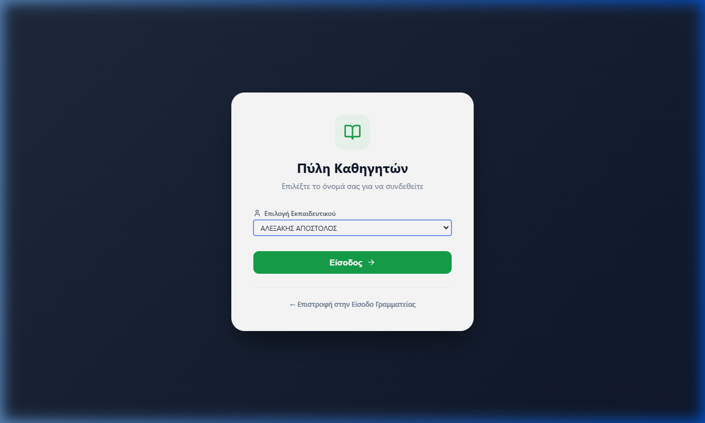
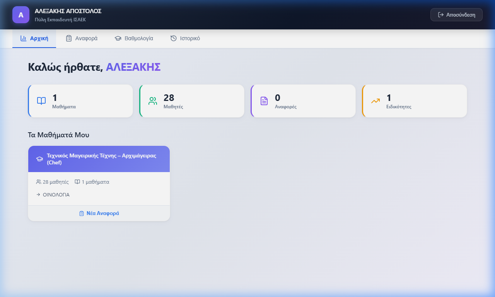
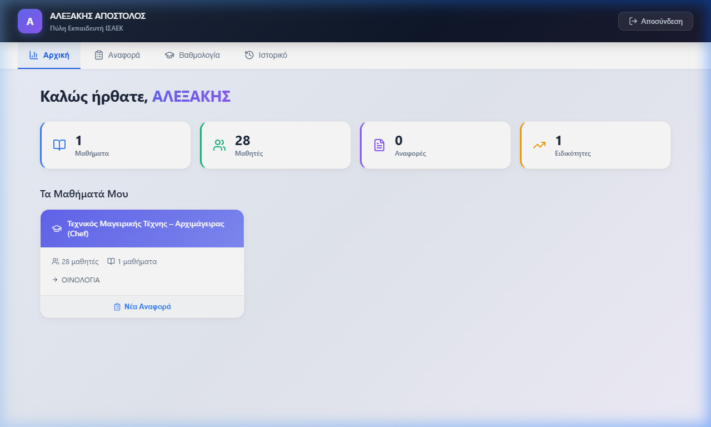
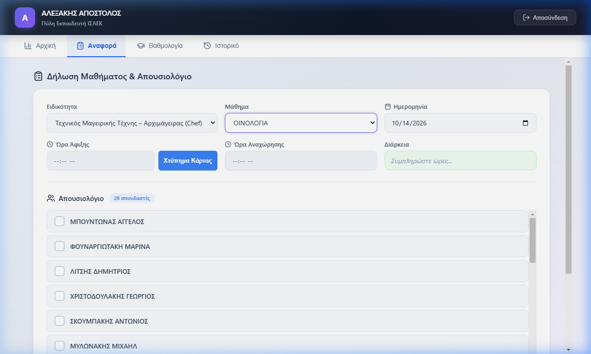
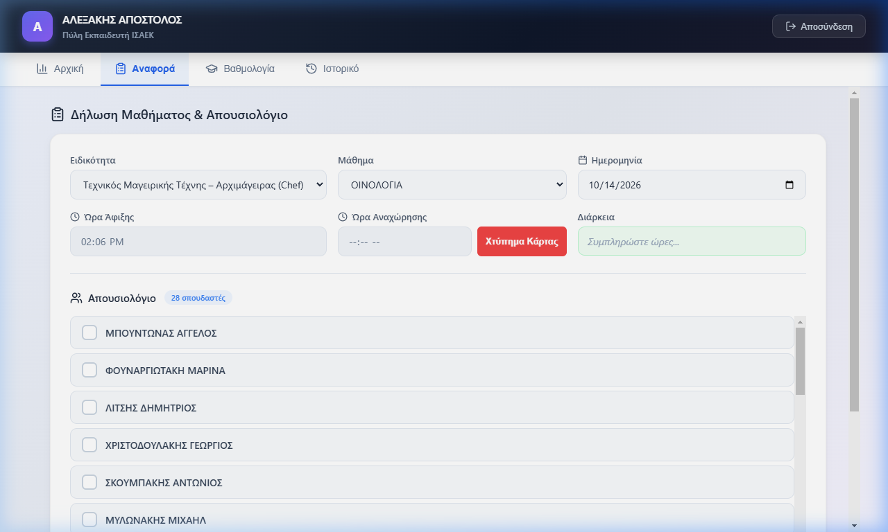
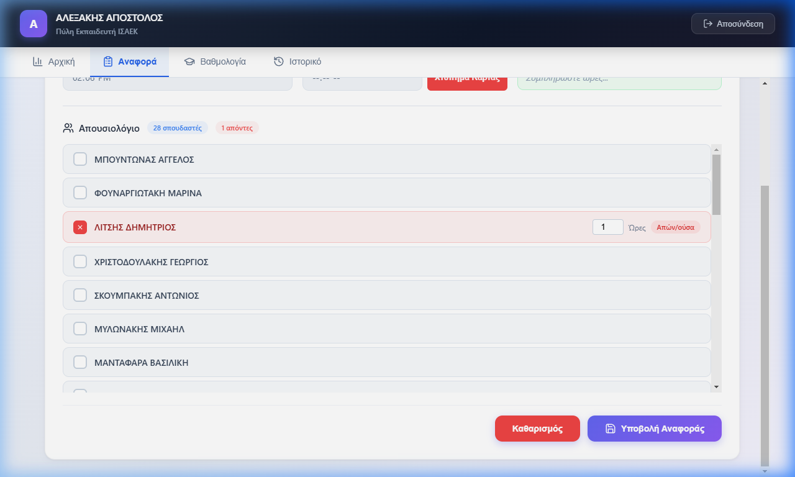
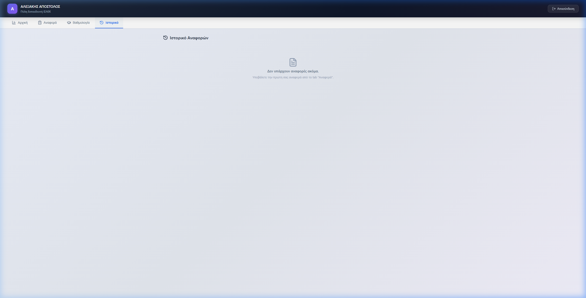

Οδηγός Χρήσης Πύλης Καθηγητών
Ολοκληρωμένος πρακτικός οδηγός με πραγματικά στιγμιότυπα οθόνης για την είσοδο, το ψηφιακό χτύπημα κάρτας, την ηλεκτρονική υποβολή παρουσιολογίων και την καταχώρηση εξαμηνιαίων βαθμολογιών.
ΨΗΦΙΑΚΟ ΩΡΑΡΙΟ
Έναρξη & Λήξη Μαθήματος με 1 Κλικ
ΑΠΟΥΣΙΟΛΟΓΙΟ
Αυτόματη Καταγραφή & Συγχρονισμός
ΒΑΘΜΟΛΟΓΙΟ
Εργασία 20% & Τελική Εξέταση 80%
-
1. Εισαγωγή & Τρόποι Πρόσβασης στην Πύλη — 3 τρόποι εισόδου & επιλογή ονόματος
Κεφ. 1
-
2. Περιβάλλον Εργασίας (Dashboard) — Μετρητές και «Τα Μαθήματά Μου»
Κεφ. 2
-
3. Δήλωση Μαθήματος & «Χτύπημα Κάρτας» — Ψηφιακό ωράριο άφιξης/αναχώρησης
Κεφ. 3
-
4. Καταγραφή Απουσιολογίου Σπουδαστών — Επιλογή απόντων & ώρες απουσίας
Κεφ. 4
-
5. Καταχώρηση & Υπολογισμός Βαθμολογιών — Εργασία 20% & Εξέταση 80%
Κεφ. 5
-
6. Ιστορικό Δηλώσεων & Συχνές Ερωτήσεις (FAQ) — Επαλήθευση & Τεχνική Υποστήριξη
Κεφ. 6
Η Πύλη Καθηγητών αποτελεί την αυτόνομη πλατφόρμα των εκπαιδευτών του ΙΣΑΕΚ. Διαθέτει πλέον ξεχωριστή συνεδρία από τη Γραμματεία, ώστε να μπορεί να λειτουργεί απρόσκοπτα από οποιαδήποτε συσκευή χωρίς εμπλοκή με άλλους λογαριασμούς.
3 Τρόποι για να Ανοίξετε την Πύλη:
Τρόπος 1: Από το Μενού της Γραμματείας (Νέο Κουμπί!)
Μέσα στην κεντρική εφαρμογή, στο αριστερό μενού κάτω από τους «Καθηγητές», υπάρχει η επιλογή «🎓 Πύλη Καθηγητών ↗». Κάνοντας κλικ εκεί, ανοίγει αυτόματα η Πύλη σε νέα καρτέλα!
Τρόπος 2: Από την Οθόνη Σύνδεσης Γραμματείας
Στο κάτω μέρος της κεντρικής οθόνης εισόδου υπάρχει το πράσινο κουμπί «🎓 Μετάβαση στην Πύλη Καθηγητών», που σας μεταφέρει κατευθείαν στην οθόνη εκπαιδευτικών.
Τρόπος 3: Απευθείας Σύνδεσμος (URL)
Πληκτρολογήστε τη διεύθυνση προσθέτοντας στο τέλος /teacher (π.χ. http://localhost:5173/teacher ή https://το-site-σας/teacher).

Στιγμιότυπο 1: Επιλογή Ονοματεπώνυμου Εκπαιδευτικού & Είσοδος
Οθόνη Σύνδεσης
ℹ️
Διαδικασία Εισόδου: Επιλέγετε το ονοματεπώνυμό σας από την αλφαβητική λίστα και πατάτε «Είσοδος ➔». Δεν απαιτείται κωδικός PIN. Εμφανίζονται αποκλειστικά τα μαθήματα που σας έχουν ανατεθεί.
Μόλις συνδεθείτε, αντικρίζετε την κεντρική οθόνη υποδοχής. Στο πάνω μέρος εμφανίζεται το ονοματεπώνυμό σας, κουμπί «Αποσύνδεση» και οι 4 βασικές καρτέλες πλοήγησης (Αρχική, Αναφορά, Βαθμολογία, Ιστορικό).

Στιγμιότυπο 2: Κεντρικός Πίνακας Ελέγχου με Μετρητές (Μαθήματα, Μαθητές, Αναφορές, Ειδικότητες)
Αρχική Οθόνη
Κάρτες «Τα Μαθήματά Μου»
Κάθε ειδικότητα στην οποία διδάσκετε εμφανίζεται σε ξεχωριστό πλαίσιο. Περιλαμβάνει το πλήθος μαθητών, τα ανατεθειμένα μαθήματα και το κουμπί «Νέα Αναφορά».

Στιγμιότυπο 3: Λίστα Ειδικοτήτων & Κουμπί «Νέα Αναφορά» για Άμεση Έναρξη Δήλωσης
Τα Μαθήματά Μου
💡
Συντόμευση: Πατώντας «Νέα Αναφορά» στην κάρτα μιας ειδικότητας, μεταφέρεστε απευθείας στη φόρμα παρουσιολογίου με προσυμπληρωμένη την ειδικότητα!
Στην καρτέλα «Αναφορά» καταγράφεται η παρουσία σας στην τάξη με το ψηφιακό σύστημα «Χτύπημα Κάρτας». Τα πεδία ώρας είναι κλειδωμένα και συμπληρώνονται αυτόματα με το πάτημα των κουμπιών.

Στιγμιότυπο 4: Επιλογή Ειδικότητας & Μαθήματος — Έτοιμο για Χτύπημα Κάρτας
Φόρμα Αναφοράς
Βήματα Καταγραφής Ωραρίου
Βήμα 1: Επιλογή Ειδικότητας & Μαθήματος
Επιλέξτε την Ειδικότητα και το Μάθημα που θα διδάξετε. Η ημερομηνία ορίζεται αυτόματα στη σημερινή ημέρα.
Βήμα 2: Άφιξη — «Χτύπημα Κάρτας» (Μπλε Κουμπί)
Κατά την είσοδό σας στην αίθουσα, πατήστε το μπλε κουμπί «Χτύπημα Κάρτας». Η τρέχουσα ώρα κλειδώνει αυτόματα στο σύστημα.

Στιγμιότυπο 5: Ώρα Άφιξης Κλειδωμένη — Το κόκκινο κουμπί ενεργοποιείται για την αναχώρηση
Καταγεγραμμένη Άφιξη
Βήμα 3: Αναχώρηση — «Χτύπημα Κάρτας» (Κόκκινο Κουμπί)
Με την ολοκλήρωση της διδασκαλίας, πατήστε το κόκκινο κουμπί «Χτύπημα Κάρτας» δίπλα στην Ώρα Αναχώρησης. Το σύστημα υπολογίζει αυτόματα τις ώρες και τα λεπτά!
🛡️
Αυτόματη Προστασία (Auto-Save): Εάν κατά τη διάρκεια του μαθήματος κλείσετε κατά λάθος το κινητό ή την καρτέλα, η ώρα άφιξης δεν χάνεται! Είναι αποθηκευμένη τοπικά και θα επανέλθει αυτόματα.
Μόλις επιλεγεί το μάθημα, εμφανίζεται αυτόματα κάτω από τη φόρμα η ονομαστική κατάσταση όλων των εγγεγραμμένων σπουδαστών του τμήματος.

Στιγμιότυπο 6: Ονομαστικό Απουσιολόγιο — Επισήμανση Απόντα με Κόκκινο & Ρύθμιση Ωρών
Απουσιολόγιο
Κανόνες Σημείωσης Απουσιών:
- Εξ' ορισμού Παρόντες: Όλοι οι σπουδαστές θεωρούνται παρόντες μέχρι να τους επιλέξετε.
- Σημείωση Απουσίας: Κάντε κλικ στο τετραγωνίδιο δίπλα στο όνομα του απόντα. Η γραμμή θα κοκκινίσει με ένδειξη Απών/ούσα.
- Ρύθμιση Ωρών: Αυτόματα αποδίδονται οι ώρες του μαθήματος. Εάν κάποιος σπουδαστής αποχώρησε νωρίτερα, αλλάζετε το νούμερο στο πεδίο ωρών.
Οριστική Υποβολή Αναφοράς
Πατήστε το μωβ κουμπί «Υποβολή Αναφοράς»
Με το πάτημα του κουμπιού:
1. Αποθηκεύεται η δήλωση παρουσίας του καθηγητή στη βάση δεδομένων.
2. Χρεώνονται αυτόματα οι απουσίες στην ατομική καρτέλα κάθε μαθητή.
3. Η φόρμα καθαρίζει αυτόματα και είναι έτοιμη για το επόμενο μάθημα.
🔄
Κουμπί «Καθαρισμός»: Εάν ξεκινήσατε μια δοκιμαστική δήλωση και θέλετε να μηδενίσετε όλα τα πεδία και τις ώρες, πατήστε το κόκκινο κουμπί «Καθαρισμός» και επιβεβαιώστε το μήνυμα.
Στην καρτέλα «Βαθμολογία» (Graduation Cap), επιλέγετε Ειδικότητα και Μάθημα. Εμφανίζεται η λίστα των σπουδαστών για την καταχώρηση των βαθμών:
📐
Τελικός Βαθμός Μαθήματος = (Εργασία 6μήνου × 20%) + (Τελική Εξέταση × 80%)
Ο τελικός βαθμός υπολογίζεται αυτόματα σε πραγματικό χρόνο καθώς πληκτρολογείτε!
| Σπουδαστής |
Εργασία 6μήνου (20%) |
Τελική Εξέταση (80%) |
Τελικός Βαθμός |
| Γεωργίου Νικόλαος |
18 |
16 |
16.4 |
| Δημητρίου Ελένη |
14 |
15 |
14.8 |
Αποθήκευση Βαθμολογίας
Μόλις συμπληρώσετε τους βαθμούς, πατήστε το πράσινο κουμπί «Αποθήκευση Βαθμολογίας» για άμεσο συγχρονισμό με το μητρώο της Γραμματείας.

Στιγμιότυπο 7: Καρτέλα «Ιστορικό» — Έλεγχος Παλαιότερων Υποβολών & Ωραρίων
Ιστορικό Αναφορών
Συχνές Ερωτήσεις (FAQ)
1. Ξέχασα να πατήσω «Χτύπημα Κάρτας» κατά την άφιξη.
Πατήστε το μόλις το θυμηθείτε και ενημερώστε τη Γραμματεία κατά την έξοδό σας ώστε να επιβεβαιώσει και να διορθώσει τη δηλωθείσα ώρα στο κεντρικό σύστημα.
2. Έβαλα κατά λάθος απουσία σε σπουδαστή και πάτησα Υποβολή.
Η Γραμματεία έχει άμεση πρόσβαση στην καρτέλα του σπουδαστή και στην προβολή «Αναφορές Καθηγητών» όπου μπορεί να διαγράψει ή να τροποποιήσει την απουσία ανά πάσα στιγμή.
📞
Τεχνική Υποστήριξη & Γραμματεία ΙΣΑΕΚ
Για οποιαδήποτε απορία ή ανάγκη τεχνικής υποστήριξης, μπορείτε να απευθύνεστε στο γραφείο γραμματείας του Επιμελητηρίου Ηρακλείου.
© 2026 ΙΣΑΕΚ Επιμελητηρίου Ηρακλείου — Σύστημα Διαχείρισης Εκπαιδευτικών Αναφορών (ISAEK CMS)